Vision Based Navigation
Computer Vision Group - TUM
Practical Course: Vision Based Navigation
Premeeting
Mateo de Mayo, Jason Chui, Jonathan Eichhorn
Prof. Dr. Daniel Cremers
Version: 01.04.2026
Motivations
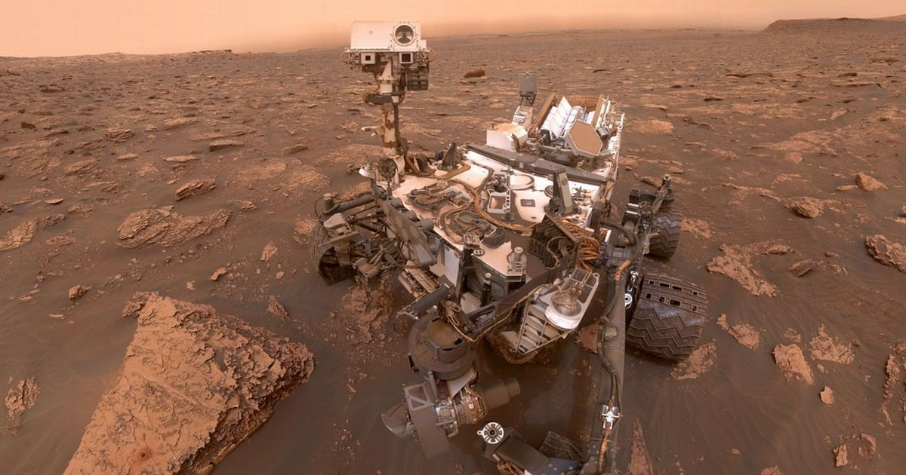
No GPS
Pose estimation
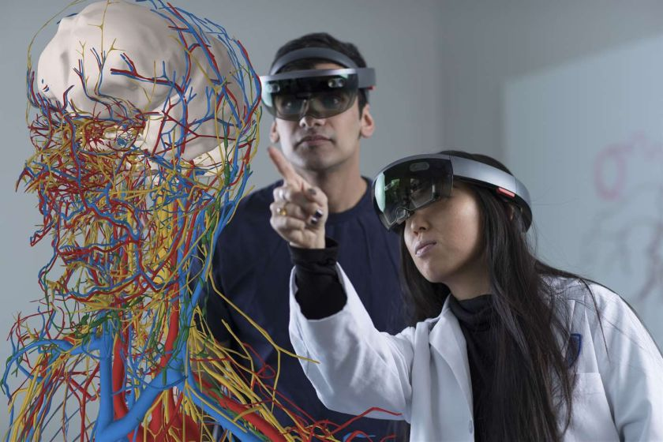
Path planning
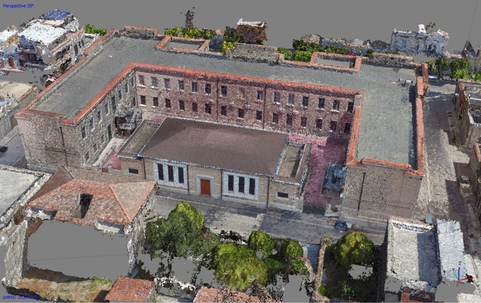
3D reconstruction
Content of this course
You can gain practical experience with
Visual odometry and localisation / state estimation
Vision-based Simultaneous Localization and Mapping (SLAM)
Structure from Motion (SfM)
Implementation of algorithms
Benefits / drawbacks of specific methods when applied to
concrete, relevant problems
Get familiar with relevant software libraries (Eigen, Ceres,
OpenGV, …)
Learn how to work in teams / on projects
Improve your presentation skills
Course organisation
Course takes place during the lecture period
In Garching CIT in a seminar room TBD
Work on your own machine
We support Ubuntu 22.04, 24.04, and 26.04 (MacOS and Windows may
work with some cmake tweaking)
Initial phase (first 5 weeks): Lectures & Exercises
Mondays 2-4 pm lecture
Mondays 4-6 pm exercise session
Programming assignments will be handed out every week and checked /
graded by the tutors
Assignments are worked on individually by every student; each
participant should be able to explain their solution
Attendance to lecture and exercise sessions voluntary (but
highly encouraged)
Second phase (5-7 weeks): project
Work in small groups (1-2 people) on a project
Mandatory weekly meeting with tutors to discuss progress and next
steps (Mondays 2-6 pm)
Implement a specific algorithm / extension / paper, which one
tbd
Present project outcome in talk and Q&A session (15+5 min per
group)
Written report on project outcome (10-12 pages, single column,
single-spaced lines, 11pt)
Topics covered
3D geometry and camera models
Non-linear optimisation and camera calibration
Feature detectors and descriptors, feature matching, RANSAC
Offline Structure from Motion, Bundle Adjustment, Schur
complement
Visual odometry and SLAM (online BA)
Possible topics for projects:
Large-scale consistency for SLAM
Visual place recognition
Optical flow for visual odometry
Gaussian Splatting SLAM
Direct methods (odometry, BA)
Dense reconstruction
Rotation / Translation averaging (global SfM)
…
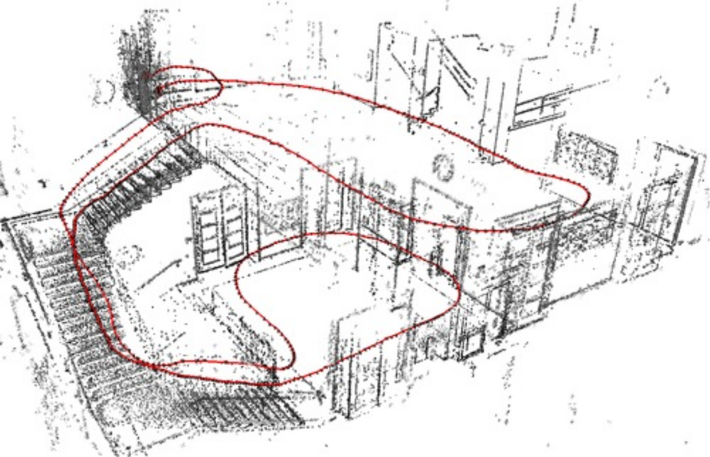
Course requirements
Knowledge of C++ is essential (C/Zig/Rust
experience may be accepted)
Good knowledge of basic mathematics such as linear algebra,
calculus, probability theory, and numerics is required
Prior practical knowledge in robotics and computer vision topics
is a plus
Participation in at least one of the following lectures of the
TUM Computer Vision Group
Computer Vision I: Variational Methods
Computer Vision II: Multiple View Geometry
Similar lectures can also be accepted
Note: If you don’t satisfy the requirements but are still
interested in the course, please contact us and we can discuss your case
individually
Course registration
You apply for this course through the matching system: https://matching.in.tum.de/
Additionally, you have to send us an email:
Please specify how you meet the course requirements / if you have
attended any related computer vision courses before!
Comment on your programming experience in C++ ! List
concrete examples of projects you have worked on or send us your
github/gitlab/etc profile.Send all your grade transcripts, in particular showing any lectures
on pre-requisite topics (computer vision / robotics / maths) that you
have attended to: visnav-ss26@vision.in.tum.de
The deadline for the matching system and prerequisite email is
17.02.2026.
We can only guarantee places to students assigned through the
matching process (and fitting the course requirements)!
Watch announcements on the course website: https://cvg.cit.tum.de/teaching/ss2026/visnav_ss2026
The course starts on Monday, 20.04.20267 at 2 pm in CIT seminar room
TBD.
Questions?
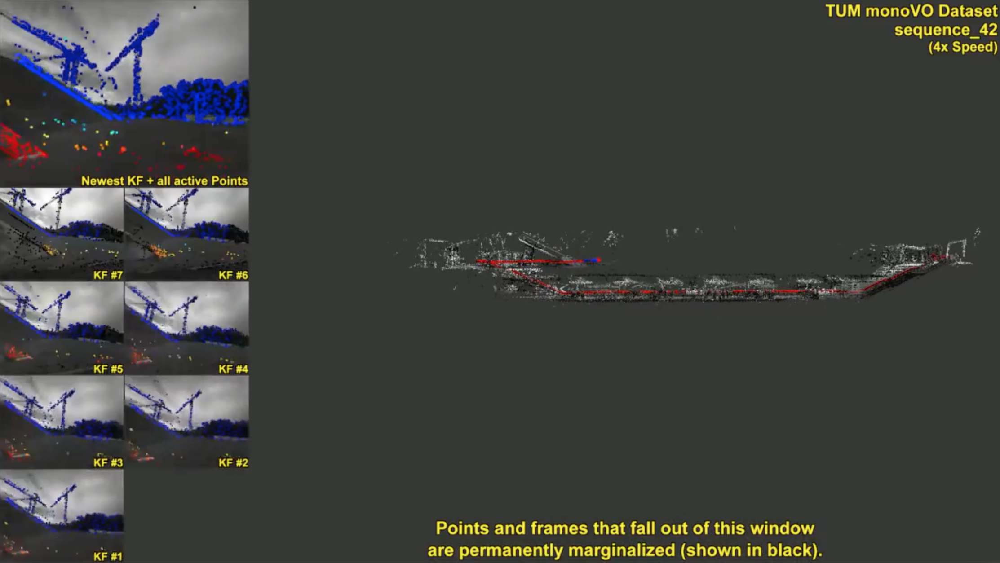
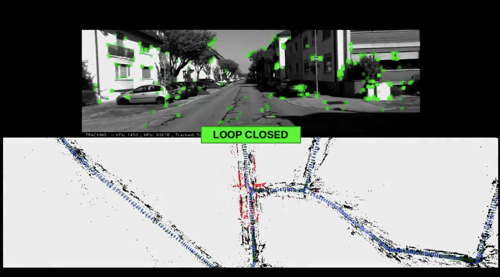
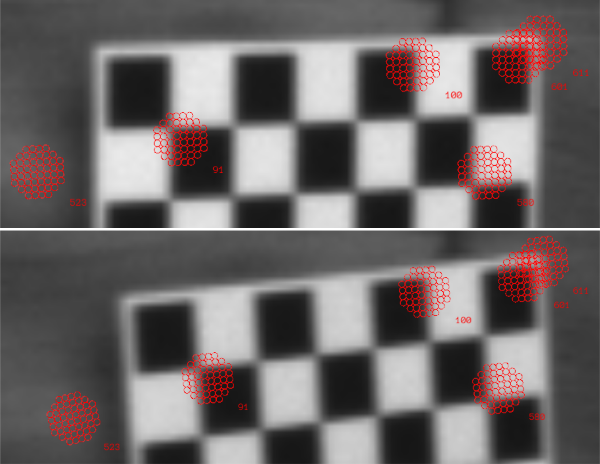
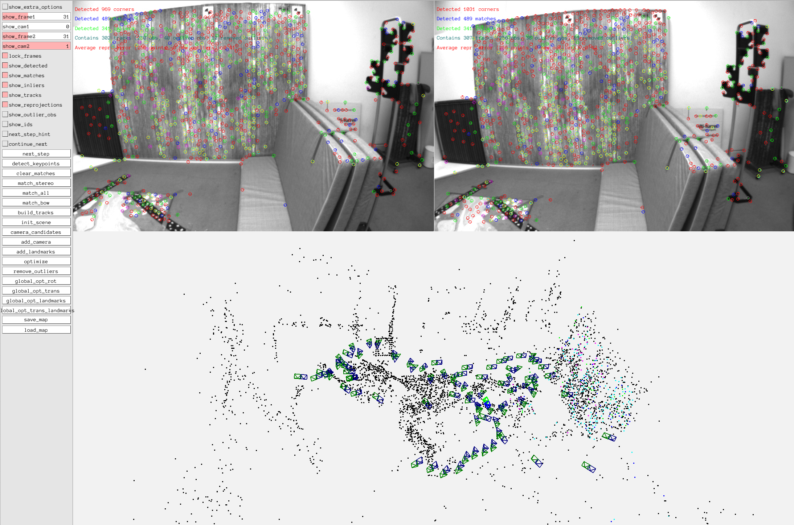
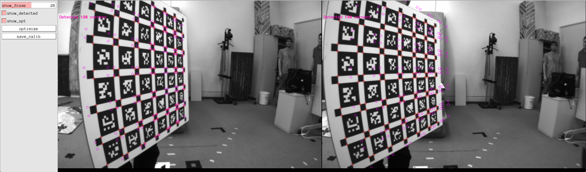
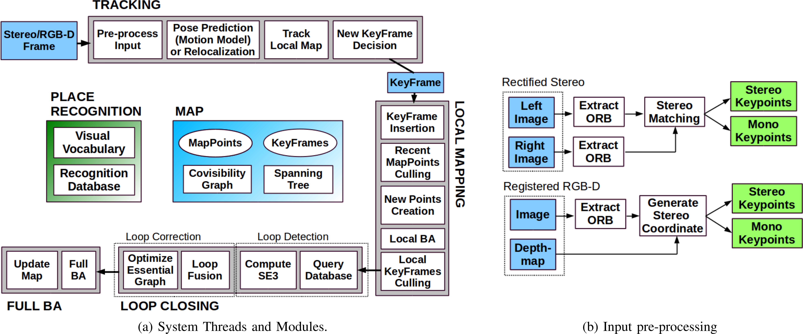
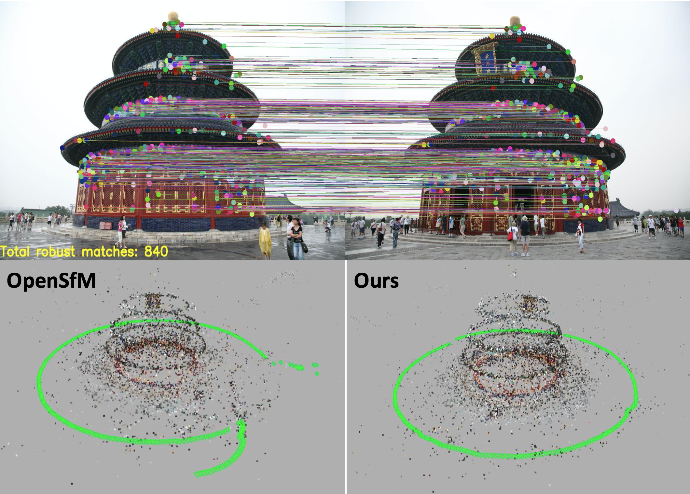
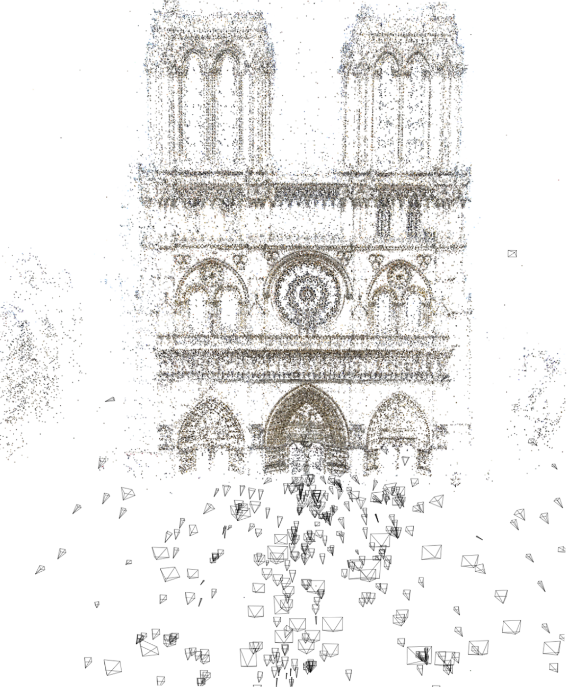
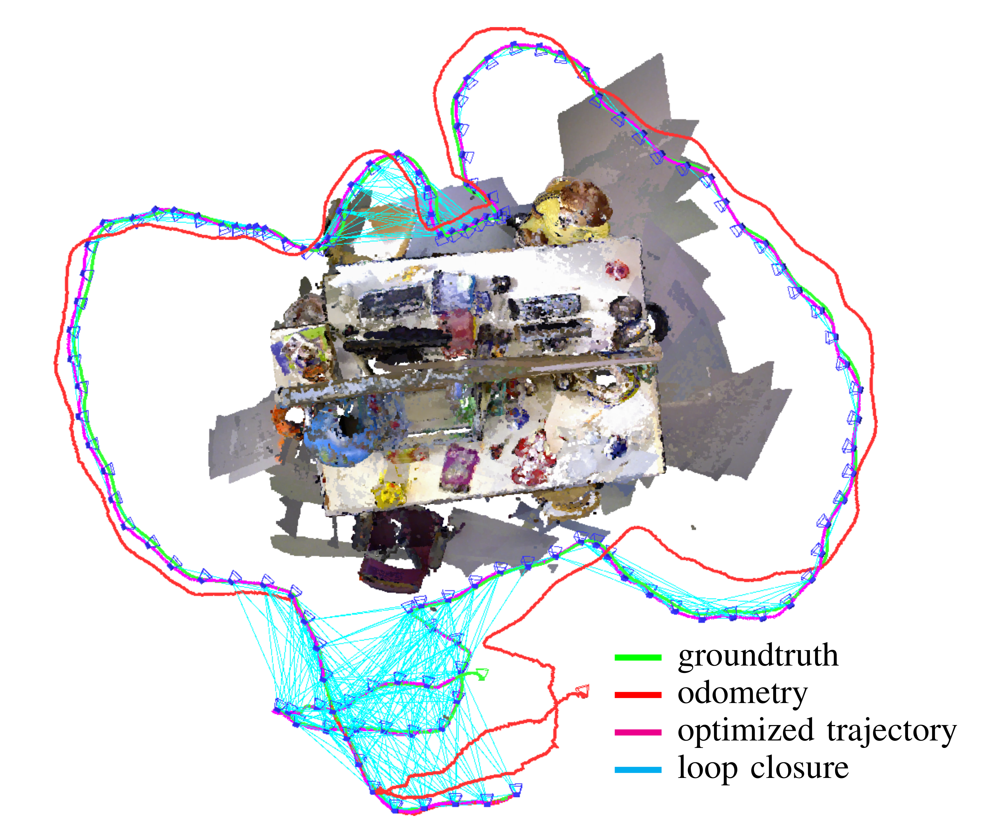